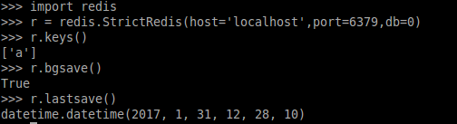
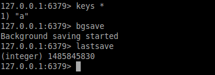

<md-dialog>
	<form>
		<md-toolbar>
			<div class="md-toolbar-tools">
				<h2>bgsave()</h2>
				<span flex></span>
				<md-button class="md-icon-button" ng-click="cancel()">
					<md-icon md-svg-src="../static/img/ic_close_24px.svg" aria-label="Close dialog">
					</md-icon>
				</md-button>
			</div>
		</md-toolbar>
		<md-dialog-content style="max-width:800px;max-height:810px; ">
			<md-tabs md-dynamic-height md-border-bottom>
				<md-tab label="DESCRIPTION">
					<md-content class="md-padding">
						<h1 class="md-display-2">DESCRIPTION</h1>
						<p>Using this function we can check time, when last time data was saved. To explain it's working, we have been using these other functions in <strong>IMAGE</strong> tab :</p>
						<ul>
							<li>keys()</li>
							<li>bgsave()</li>
						</ul>
					</md-content>
				</md-tab>
				<md-tab label="CODE">
					<md-content class="md-padding">
						<h1 class="md-display-2">CODE SYNTAX</h1>
						<code>r.lastsave()</code>
					</md-content>
				</md-tab>
				<md-tab label="IMAGE">
					<md-content class="md-padding">
						<h2 class="md-display-2">CODE EXECUTION IMAGE</h2>
						<ol type="1">
							<li>Getting Redis Connection and checking all keys by <strong><code>r.keys()</code></strong>. Here < redis_instance> is <strong>r</strong>.
							Now use <code><strong>r.bgsave()</strong></code> function to save data.  For checking when it was saved use lastsave. It will return datetime object when last time data was saved.
							</li>
							
							<li>Start Redis Client by command<strong><code>redis-cli</code></strong> in different termianl and for checking all keys, use command <strong><code>keys *</code></strong>. Than use <code><strong>bgsave</strong></code> to save data. For checking when it was saved use lastsave. It will return the UNIX TIME of the last DB save executed with success.</li>
							
						</ol>
					</md-content>
				</md-tab>
			</md-tabs>
		</md-dialog-content>

		<!-- <md-dialog-actions layout="row">
		<md-button href="http://en.wikipedia.org/wiki/Mango" target="_blank" md-autofocus>
		More on Wikipedia
		</md-button>
		<span flex></span>
		<md-button ng-click="answer('not useful')" >
		Not Useful
		</md-button>
		<md-button ng-click="answer('useful')" style="margin-right:20px;" >
		Useful
		</md-button>
	</md-dialog-actions> -->
</form>
</md-dialog>

